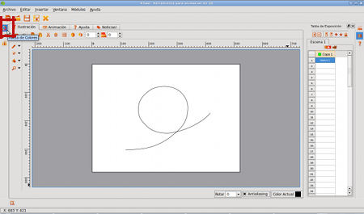
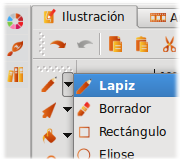

|
Fig #n. Propiedades de la Brocha
Hora de dibujar
Una vez nos encontremos trabajando en el Módulo de Ilustración, contaremos con el Lápiz como herramienta de trabajo automáticamente y tendremos a nuestra disposición el primer marco de la animación.
Fig #n. Ingresando al Módulo de Ilustración
Ahora, vamos a trazar una línea guía que defina cual va a ser la trayectoria de nuestra mariposa, según lo definimos en el guión y aprovechando que la herramienta Lápiz ya se encuentra seleccionada:
Fig #n. Trazando una Linea guia
Ten en cuenta que puedes ajustar la trayectoria de tu línea guía, utilizando la opción "Selección de Nodos", ubicada en la barra de herramientas:
Fig #n. Activando Selección de Nodos
Cuando selecciones la línea que acabaste de trazar, se verá así:
Fig #n. Activando Selección de Nodos
Modifica aquellos nodos en donde la línea guía requiera ser suavizada. Nuestro objetivo es conseguir que la curva que trazamos sea lo más parecida a la trayectoria que queremos para nuestra mariposa. Busca un resultado similar a este:
Fig #n. Línea guía corregida
Es momento de dibujar a nuestra protagonista. Lo primero que vamos a hacer, es ajustar el grueso de la línea a nuestro gusto. Presiona el botón "Brocha" ubicado en la barra lateral izquierda:
|
|
Fig #n. Propiedades de la Brocha
Y ajusta el valor del grosor del Lápiz de acuerdo al tipo de trazo con el que quieras trabajar:
Fig #n. Asignando un nuevo grosor al Lápiz
Ahora solo nos falta escoger el color con el que queremos empezar a dibujar. Para ello, hacemos click sobre el botón "Paleta de Colores", ubicado en la barra lateral izquierda:
|  |
Fig #n. Paleta de Colores
Vamos a utilizar un tono café para el cuerpo y un tono azul para las alas. Comencemos con el café:
Fig #n. Seleccionando el color café
Muy bien, ahora escojamos la herramienta Lápiz y comencemos a trazar:
|  |
Fig #n. Dibujando el cuerpo de la mariposa
Realizamos el cambio de color para las alas, y terminamos de trazar la primera posicion de la mariposa. Recuerda que nos encontramos en el marco #1:
Fig #n. Dibujando las alas de la mariposa
Tip: Debido a que esta versión se encuentra aún en desarrollo, es probable que el programa se cierre inesperadamente en algunas ocasiones. Te recomendamos grabar tus ejercicios desde el inicio.
Fig #n. Seleccionando el color café
Ya tenemos listo el primer marco de nuestra animacion, ahora debemos crear los siguientes.